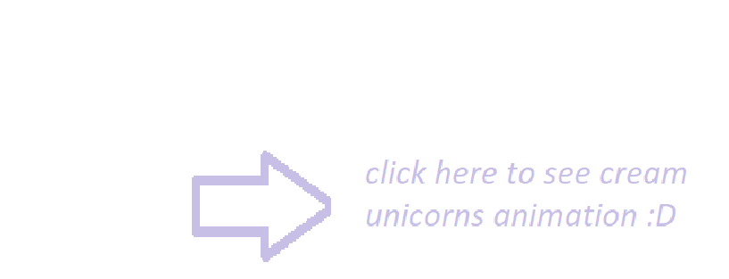
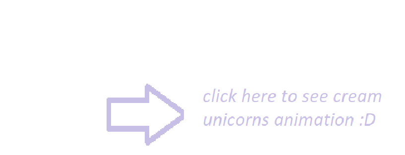

Cream Unicorn Cookie (Korean: 크림 유니콘 쿠키, keulim yunikon kuki) is an Epic Cookie released in the Festival of Dreams & Wishes update (version 3.4.001). They are of the Healing type and their position is prioritized to the Class rear.
The music starts, and Cream Unicorn Cookie transforms into the Dreamy Unicorn. The Dreamy Unicorn reduces Crit DMG received by the team and charges towards the enemies, silencing them. While silenced, the enemies skill Cooldown will paused. The Dreamy Unicorn will leave Dancing Butterflies behind itself. These butterflies will fly towards the allies and heal them. The amount of Healing received depends on the amount of HP lost. Regular Healing targets will receive a DMG-reducing buff.
A desolate amusement park lies in darkness. Lights flicker on one by one. A merry-go-round begins to rotate slow and steady to a bygone song of the past. The park magically returns to life as a lone pony, embraced by the purest of rainbows, opens their eyes. The silky mane and creamy tail turn into elegant locks of hair. Decorations spring to life as fluttering sugar butterflies. Cream Unicorn Cookie flies around the park with the sugar butterflies in tow. After floating among the attractions, a graceful landing on top of the Ferris wheel concludes the course. A whisper escapes while gazing upon the entirety of the park. "In the end, all that shines are memories and stars." A flashback of the glee and joy of young Cookies running towards the merry-go-round plays before wistful eyes. If only it could turn for eternity...A dream to be a part of the happiness and laughter of children has manifested as a unicorn. The dream never stops, regardless of night or day."
Cream Unicorn Cookie is the first Epic Healing Cookie to be added to the game post-launch. Cream Unicorn Cookie is the second post-launch Healing Cookie to be added overall, following Pure Vanilla Cookie's release over a year prior to their release on April 8th, 2021. Cream Unicorn Cookie's internal name is "cookie0157". According to their loading screen trivia, "The forgotten amusement park is still waiting for pure joy and laughter to return. Cream Unicorn Cookie's Japanese voice actor, Takeuchi Shunsuke, also provides the voice of purple yam cookie

 
